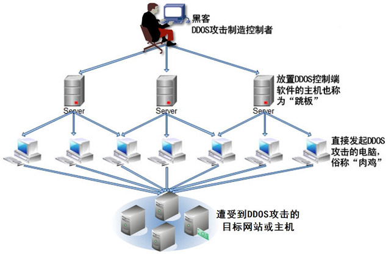

Dos攻击在众多网络攻击技术中是一种简单有效并且具有很大危害性的攻击方法。它通过各种手段消耗网络带宽和系统资源，或者攻击系统缺陷，使正常系统的正常服务陷于瘫痪状态，不能对正常用户进行服务，从而实现气绝正常用户访问服务，下面介绍几种觉Dos攻击方法。
1、SYN-Flood洪水攻击
2、Land攻击
3、Smurf攻击
4、UDP-Flood攻击
DDOS攻击是基于DOS攻击的一种特殊形式。攻击者将多台受控制的计算机联合起来向目标计算机发起DOS攻击，它是一种大规模协作的攻击方式，主要瞄准比较大的商业站点，具有较大的破坏性。

DDos攻击由攻击者、主控端和代理端组成。攻击者是整个DDos攻击发起的源头，它事先已经取得了多台主控端计算机的控制权，主控端极端基分别控制者多台代理端计算机。在主控端计算机上运行着特殊的控制进程，可以接受攻击者发来的控制指令，操作代理端计算机对目标计算机发起DDos攻击。
DDOS攻击之前，首先扫描并入侵有安全漏洞的计算机并取得控制权，然后在每台被入侵的计算机中安装具有攻击功能的选程遥控程序，用于等待攻击者发出入侵命令。这些工作是自动、高速完成的，完成后攻击者会消除它的入侵痕迹，使系统的正常用户一般不会有所察觉。攻击者之后会继续利用已控制的计算机扫描和入侵更多的计算机。重复执行以上步骤，将会控制越来越多的计算机。
常用的DDos攻击工具有：
1、Trinoo和Wintrinoo
2、TFN和TFN2K
3、Stsche ldraht[1]
DDOS是英文Distributed Denial of Service的缩写，意即“分布式拒绝服务”，那么什么又是拒绝服务（Denial
of Service）呢？可以这么理解，凡是能导致合法用户不能够访问正常网络服务的行为都算是拒绝服务攻击。也就是说拒绝服务攻击的目的非常明确，就是要阻止合法用户对正常网络资源的访问，从而达成攻击者不可告人的目的。虽然同样是拒绝服务攻击，但是DDOS和DOS还是有所不同，DDOS的攻击策略侧重于通过很多“僵尸主机”（被攻击者入侵过或可间接利用的主机）向受害主机发送大量看似合法的网络包，从而造成网络阻塞或服务器资源耗尽而导致拒绝服务，分布式拒绝服务攻击一旦被实施，攻击网络包就会犹如洪水般涌向受害主机，从而把合法用户的网络包淹没，导致合法用户无法正常访问服务器的网络资源，因此，拒绝服务攻击又被称之为“洪水式攻击”，常见的DDOS攻击手段有SYN
Flood、ACK Flood、UDP Flood、ICMP Flood、TCP Flood、Connections Flood、Script
Flood、Proxy Flood等；而DOS则侧重于通过对主机特定漏洞的利用攻击导致网络栈失效、系统崩溃、主机死机而无法提供正常的网络服务功能，从而造成拒绝服务，常见的DOS攻击手段有TearDrop、Land、Jolt、IGMP
Nuker、Boink、Smurf、Bonk、OOB等。就这两种拒绝服务攻击而言，危害较大的主要是DDOS攻击，原因是很难防范，至于DOS攻击，通过给主机服务器打补丁或安装防火墙软件就可以很好地防范，后文会详细介绍怎么对付DDOS攻击。
随着DDOS攻击在互联网上的肆虐泛滥，面对各种潜在不可预知的攻击威胁，维护网络安全已然成为互联网公民的首要任务。比起最初的简单DOS，DDOS攻击表现的是更为分布、协奏的大规模攻击阵势，其破坏性也是前所不及的。这也使得DDOS的防范工作变得更加困难。该采取怎样的措施进行有效的应对呢？打击DDOS攻击主要是以预防为主，下面是以网络安全防范为己任的云盾网安介绍新推出的云防御DDOS安全防护系统的几大特点：
特点一：多重整合
随着DDOS恶性攻击事情的不断出现，互联网环境以及网站的安全性问题也在不断曝光，当前网站的安全处于一种非常脆弱的状态，未来的DDOS防范工作应从每个运行的关键点上层层加深防御力度，在深谙DDOS的攻击路数以及规律特点之后，采取相应的措施，将DDOS攻击所带来的影响降到最低。
云盾网安的DDOS云防御体系将从6方面给网站带来安全的防护：高防服务器、高防智能DNS、高防服务器集群、集群式防火墙架构、网络监控系统、高防智能路由体系。6个子产品架构智能形成的的多层次、多角度、多结构的终极CC/DDOS防护架构，提供定期扫描监控、骨干点配置防火墙、合理配置网络设备、入侵过滤等等服务，对于网站每个可能被黑客利用的安全漏洞修复不漏，让安全问题不再成为网站担心的因素之一，为用户提供真正的保障。
特点二：智能防御
云盾网安的DDOS云防御体系通过网络监控实现定期扫描网络主节点，利用智能DNS解析系统设置监测端口，时刻提防可能存在的安全漏洞，如果一个节点遭受攻击时将会自动切换至另一节点。在面临攻击威胁时，以海量的容量和资源拖垮黑客的攻击，云盾网安的DDOS云防御体系能彻底有效处理超过100G以下SYNFlood、ACKFlood、ICMPFlood、UDPFlood、DNSFlood的DDOS攻击，并能有效处理连接耗尽、HTTPGetFlood、DNSQueryFlood、CC攻击等。而面对黑客DDOS攻击时，云盾组建的是分布式集群防御，可根据需求增加节点数量提高防御力度，宕机检测系统会快速响应更换已经瘫痪的节点服务器保证网站正常状态。还可以把攻击者发出的数据包全部返回到发送点，使攻击源变成瘫痪状态，从而削减攻击能力。
特点三：自由组合
长久以来，用户的需求一直是市场的主要推动力。对于不同的运营情况、不同的格局规模，用户对于网站的安全也提出了层次不同的需求。面对这些细化的个体标准，DDOS防御服务提供商需要考虑的是如何满足用户个性化的需求。鉴于此，云盾网安的DDOS云防御体系【云盾网安】不是一个强行捆绑的庞大体系，它每一个子产品都互相呼应，又相对独立。企业可以根据自己的需求情况，单独购买某一个子产品或者整合一套为自己量身裁衣的解决方案，实现企业系统由繁到简的瘦身过程。除此之外，云盾的DDOS防护产品有不同的级别划分，方便用户进行自由选择，防御体系的级别幅度在8G-100G，为用户的安全防御提供坚持的后盾基础。
阻断服务
在探讨DDoS之前我们需要先对DoS有所了解，DoS泛指黑客试图妨碍正常使用者使用网络上的服务，例如剪断大楼的电话线路造成用户无法通话。而以网络来说，由于频宽、网络设备和服务器主机等处理的能力都有其限制，因此当黑客产生过量的网络封包使得设备处理不及，即可让正常的使用者无法正常使用该服务。例如黑客试图用大量封包攻击一般频宽相对小得多的拨接或ADSL使用者，则受害者就会发现他要连的网站连不上或是反应十分缓慢。
DoS攻击并非入侵主机也不能窃取机器上的资料，但是一样会造成攻击目标的伤害，如果攻击目标是个电子商务网站就会造成顾客无法到该网站购物。
分布式阻断服务
DDoS则是DoS的特例，黑客利用多台机器同时攻击来达到妨碍正常使用者使用服务的目的。黑客预先入侵大量主机以后，在被害主机上安装DDoS攻击程控被害主机对攻击目标展开攻击;有些DDoS工具采用多层次的架构，甚至可以一次控制高达上千台电脑展开攻击，利用这样的方式可以有效产生极大的网络流量以瘫痪攻击目标。早在2000年就发生过针对Yahoo,eBay,Buy和CNN等知名网站的DDoS攻击，阻止了合法的网络流量长达数个小时。
DDoS攻击程序的分类，可以依照几种方式分类，以自动化程度可分为手动、半自动与自动攻击。早期的DDoS攻击程序多半属于手动攻击，黑客手动寻找可入侵的计算机入侵并植入攻击程序，再下指令攻击目标;半自动的攻击程序则多半具有handler控制攻击用的agent程序，黑客散布自动化的入侵工具植入agent程序，然后使用handler控制所有agents对目标发动DDoS攻击;自动攻击更进一步自动化整个攻击程序，将攻击的目标、时间和方式都事先写在攻击程序里，黑客散布攻击程序以后就会自动扫描可入侵的主机植入agent并在预定的时间对指定目标发起攻击，例如的W32/Blaster网虫即属于此类。
若以攻击的弱点分类则可以分为协议攻击和暴力攻击两种。协议攻击是指黑客利用某个网络协议设计上的弱点或执行上的bug消耗大量资源，例如TCP SYN攻击、对认证伺服器的攻击等;暴力攻击则是黑客使用大量正常的联机消耗被害目标的资源，由于黑客会准备多台主机发起DDoS攻击目标，只要单位时间内攻击方发出的网络流量高于目标所能处理速度，即可消耗掉目标的处理能力而使得正常的使用者无法使用服务。
若以攻击频率区分则可分成持续攻击和变动频率攻击两种。持续攻击是当攻击指令下达以后，攻击主机就全力持续攻击，因此会瞬间产生大量流量阻断目标的服务，也因此很容易被侦测到;变动频率攻击则较为谨慎，攻击的频率可能从慢速渐渐增加或频率高低变化，利用这样的方式延缓攻击被侦测的时间。
DDoS攻击下存活
那么当遭受DDoS攻击的时候要如何设法存活并继续提供正常服务呢?由先前的介绍可以知道，若黑客攻击规模远高于你的网络频宽、设备或主机所能处理的能力，其实是很难以抵抗攻击的，但仍然有一些方法可以减轻攻击所造成的影响。
首先是调查攻击来源，由于黑客经由入侵机器进行攻击，因此你可能无法查出黑客是由哪里发动攻击，我们必须一步一步从被攻击目标往回推，先调查攻击是由管辖网络的哪些边界路由器进来，上一步是外界哪台路由器，连络这些路由器的管理者(可能是某个ISP或电信公司)并寻求他们协助阻挡或查出攻击来源，而在他们处理之前可以进行哪些处理呢?
如果被攻击的目标只是单一ip，那么试图改个ip并更改其DNS mapping或许可以避开攻击，这是最快速而有效的方式;但是攻击的目的就是要使正常使用者无法使用服务，更改ip的方式虽然避开攻击，以另一角度来看黑客也达到了他的目的。此外，如果攻击的手法较为单纯，可以由产生的流量找出其规则，那么利用路由器的ACLs(Access
Control Lists)或防火墙规则也许可以阻挡，若可以发现流量都是来自同一来源或核心路由器，可以考虑暂时将那边的流量挡起来，当然这还是有可能将正常和异常的流量都一并挡掉，但至少其它来源可以得到正常的服务，这有时是不得已的牺牲。如果行有余力，则可以考虑增加机器或频宽作为被攻击的缓冲之用，但这只是治标不治本的做法。最重要的是必须立即着手调查并与相关单位协调解决。
预防DDoS攻击
DDoS必须透过网络上各个团体和使用者的共同合作，制定更严格的网络标准来解决。每台网络设备或主机都需要随时更新其系统漏洞、关闭不需要的服务、安装必要的防毒和防火墙软件、随时注意系统安全，避免被黑客和自动化的DDoS程序植入攻击程序，以免成为黑客攻击的帮凶。
有些DDoS会伪装攻击来源，假造封包的来源ip，使人难以追查，这个部份可以透过设定路由器的过滤功能来防止，只要网域内的封包来源是其网域以外的ip，就应该直接丢弃此封包而不应该再送出去，如果网管设备都支持这项功能，网管人员都能够正确设定过滤掉假造的封包，也可以大量减少调查和追踪的时间。
网域之间保持联络是很重要的，如此才能有效早期预警和防治DDoS攻击，有些ISP会在一些网络节点上放置感应器侦测突然的巨大流量，以提早警告和隔绝DDoS的受害区域，降低顾客的受害程度。